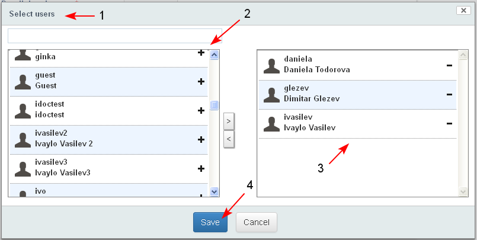
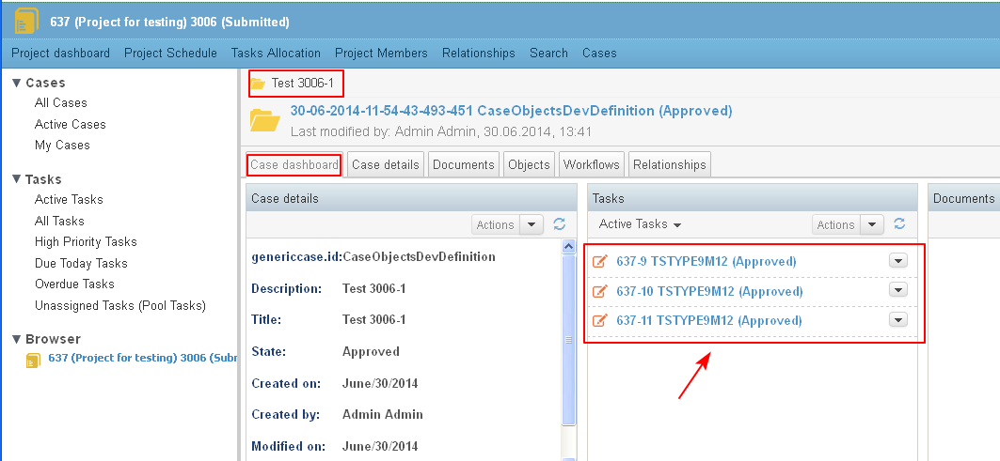
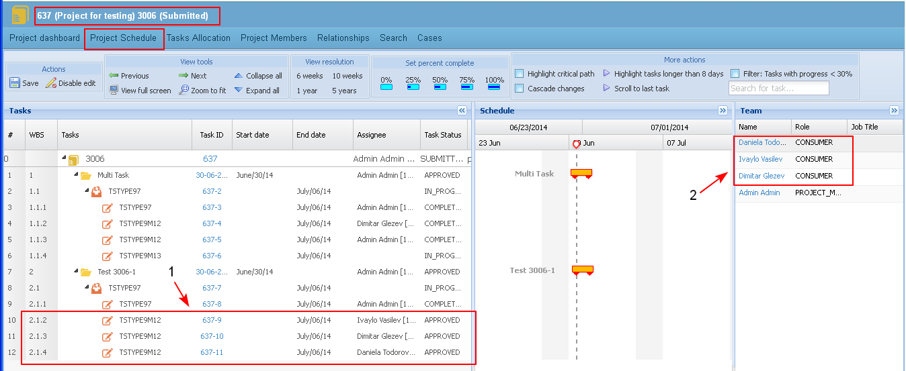

Multi-instance task is a workflow task that may be assigned to more than one user or group. Each of the assignees receives his/ her own task and should complete it. The workflow will continue only when each task is completed.
- The user starts a workflow for a case. The first task for review and approval for the selected type of workflow is of type “multi-instance task.

- The user selects more than one assignees (here - 3 assignees). The selected assignees from the list (1-2) are transferred into the right list (3).
- The user clicks "Save" (4).

- The user starts the workflow.
- The tasks are visualized in the "Tasks" dashlet on the case dashboard. Each assignee receives his/ her own task.

- The tasks are displayed in the Workflow Details.

- The tasks are visible in the Project Schedule (1-2).

- If all selected assignees approve their task, then the next task in the workflow based on the Approve transition is generated.
- If there is at least one rejection, then the next task in the workflow based on the Reject transition is generated.